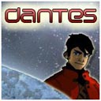
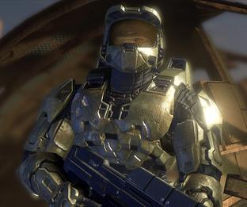
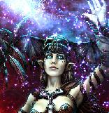

Forums galactiques > Assemblée Galactique : diplomatie officielle > Passage obligé : Présentations
Pages : 1 2 ... 12 13 14 ... 40 41
| andeman Respect diplomatique : 1393  12/09 ETU 17:51 | Score : 0 Détails tient notre ami barbare eprouverait il de la nostalgie?
enchante de faire ta connaissance aussi ami quick! | ||
| Grodjirah Respect diplomatique : 256  12/09 ETU 18:10 | Score : 0 Détails Oui... la beauté des combats, avec tout ce sang répandu. Ces humains et ces elfes autrefois si prétentieux implorant notre pitié....
Le pire c'est qu'il ne comprenaient meme pas que pour nous ils n'étaient que des animaux sans droits. Les buchers érigés en l'honneur de notre dieu ou nous jetions les banbins tout en écartelant les elfes ou en les dépecant vivants. Tous ces hurlements dans la lune... Ces chasses, ces traques... quel bonheur! Mais n'oublions pas nos valeureux freres tombés au combat qui ont rejoint notre cher Paagrio: le droit de combattre éternellement leur et accordé de par leur mort valeureuse au combat. *et là, il entamme un chant* "Dans une hutte, on a grandi Depuis tout jeune on prend des gnons l'acier tranchant c'est notre vie et nos loisirs c'est la baston! C'est en marchant dans les entrailles que les orcs montent a l'assaut et par le fer des haches de bataille taillez la chair et broyez les os!" (cf marche barbare du Donjon de Naheulbeuk) | ||
| andeman Respect diplomatique : 1393 12/09 ETU 18:32 | Score : -2 Détails mince je n'ai que la saison une!
| ||
| Grodjirah Respect diplomatique : 256 12/09 ETU 18:39 | Score : -2 Détails [total HRP] http://www.penofchaos.com/warham/donjon.htm
Perso j'aime beaucoups moins (a part le vampire hémophyle et l'arbre aux boudin, et pis deux trois autres trucs) cette saison deux, mais chacun ses gouts. | ||
| Mansfeld Respect diplomatique : 4380  12/09 ETU 18:40 | Score : 1 Détails Messieurs,
Je vous propose de vous rendre au coin café de l'assemblée, afin que vous puissiez discuter en toute convivialité et ce sans déranger les travaux officiels de l'assemblée. Je vous y offre un cappucino Deimosien ou un cocktail "dickinson"... une nouveauté quelque peu... fade, mais colorée. | ||
| Grodjirah Respect diplomatique : 256 12/09 ETU 18:42 | Score : 0 Détails Oui, toi avoir raison vieillard. Toi avoir mon respect et moi suivre ton conseil. Les orcs savent reconnaitre les anciens valeureux.
| ||
| andeman Respect diplomatique : 1393 12/09 ETU 18:45 | Score : 0 Détails oui nous nous sommes laisser emporter!cela ne se reproduira pas,
| ||
| Beth le cerf blanc Respect diplomatique : 112  13/09 ETU 20:29 | Score : 0 Détails Sig:Sig était en fait Beth le cerf blanc.Il fut transformer a la suite d'une rencontre féerique contre son gré,Enfin peut etre...En tout cas il est comme cela pour un bon moment dans l'incapacité de redevenir un cerf...
| ||
| Calila Respect diplomatique : 8 15/09 ETU 08:05 | Score : 5 Détails Commendants je me prénomme Calila. Je vient tous juste de prendre contact avec l'assemblée générale. Je ne me suis pas encore familiarisé avec les différentes fonctions de mon ambassade mais je compte bien les apprendre.
Je ne parlerais pas beaucoup sur l'AG, surtout pour ne rien dire d'intéressant mais si je ne serais pas d'accord avec quelqu'un, je compte bien le lui dire et lui expliquer pourquoi. Je ne cherche pas la guerre, bien au contraire, je suis pour le bien être de tous les commandants. Et si un jour je peux aider quelqu'un, alors je le ferais avec grand plaisir. Calila | ||
| andeman Respect diplomatique : 1393 15/09 ETU 09:39 | Score : 0 Détails en ces temps obscurs il est toujours agreable d'avoir de nouveaux et nouvelles arrivants(tes)
bienvenue camarade!!! dites moi,vous ressemblez beaucoup du moins les traits de vos visages,a la compagne d'arme d'un grand espion,qui jadis combattit les premiers veritable droides de combats.... | ||
| golo Respect diplomatique : 517 15/09 ETU 12:14  | Score : 7 Détails Bonjour a vous très chère commandants et commandantes !
Veuillez ne pas trop relever les fautes de syntaxe de notre langue officielle car moi n’avoir que quelques rudiments de base. Moi venir d’une galaxie ou les wookiees m’avoir élevé, un peuple gentil et pacificateur dont ils m’ont transmis les valeurs. Moi espérer faire dont du savoir faire wookee dans plein de domaine a la communauté désireuse d’en apprendre plus. Moi vous dire a bientôt sur les forums intergalactiques en espérant que la sagesse wookee pourra être a même d’apporter longue vie a la galaxie. Maintenant pour ceux qui comprendraient le wookee je laisse quelques phrases : shwo scwo akrcwocwowhaowo scoowh whoosc wocao rrooanoo howohuahananwouf raoaoawohuananahrc scwoc cahwhoaworcwo craanhuaoraaoahoowh woao rahu akanraahcahrc wawo oaooscscworcoaworc rahowooa hooohuc! | ||
| Sandor Darhan Respect diplomatique : 1019  15/09 ETU 16:32 | Score : 7 Détails Certain connaissent l'ombre...
D'autres l'ignorent... ...alors l'ombre arrive, se forme, et se présente... Orphelin, né de père inconnu et d'une mère, favorite frivole d'un des plus hauts barons du complexe du système des confins, je fus brulé à l'age de 8 ans par mon demi-frere plus agé que moi, qui me mit la tete dans la cheminé a ions électromagnétiques sous pretexte que je lui avais "fauché" un jouet qu'il ne retrouvait plus (ce que d'ailleurs j'ai toujours nié avoir fait). Il me pardonna de toute facon quelques minutes plus tard quand le premier couteau de cuisine à allumage protosoique instantané ( un enfant de 2 ans pourrait l'utiliser sans probleme) trouvé, lui était enfoncé dans l'oeuil droit par ma main que je découvrit particulierement agile et habile pour cette tache. Exilé du palais du baron j'entrais rapidement au service du marchand noir Gorgoroth duquel je devins rapidement le bras droit. C'était un homme bien, capable de bloquer l'acheminement des provisions et( de faire mourir des poulations entieres )rien que pour voir les prix augmenter et au passage ses bénefices. Mais il fut finalement dépouillé et tué par les juges arbitres du prince de Kaemens qui profita de son pseudo titre de chevalier-protecteur du confin pour s'approprier tout le systéme. Parti avec quelques fideles je suis arrivé sur la planète Mordor. C'est la que commencera mon règne... Mon but est de répandre le savoir et l'harmonie dans la galaxie. Il n'y a pas de connaissance qui ne soit pas bonne et qui ne puisse pas donner la chance a chacun de devenir imortel... ...l'ombre part aussi vite qu'elle est venu... | ||
| andeman Respect diplomatique : 1393 15/09 ETU 18:53 | Score : 1 Détails visiblement sandhor darhan,la frontiere entre le bien et le mal est quelque chose de flou pour vous....
interessant,j'espere que vous ne menacerait pas vos voisins l'ami.. andeman se rassit intrigue et a la fois interesse | ||
| Dantès Respect diplomatique : 149  15/09 ETU 18:59 | Score : 3 Détails Un grand mystère plane autour de votre personne, nous autres diplomates et nos mécanoïdes auront tôt fait d'éclairer votre lanterne....
Bienvenu dans ce monde de fou. | ||
| Général Lex Respect diplomatique : 2  15/09 ETU 19:20 | Score : 2 Détails Le général Lex entra pour la toute première fois dans l'assemblée. Il se présenta et commença par prendre la parole d'une voix forte:
"Bonjour, commandants et commandantes. Je suis le général Lex, j'aimerais vous dire que je suis venu avec mon peuple dans cette galaxie pour y vivre paisiblement, cela veut dire que nous sommes contre la guerre. J'essaierais avec l'assemblée galactique de résoudre les problèmes et à défendre les intérets de la démocratie. Je suis le dernier SPARTAN 117, lors de la destruction du vaisseau dans lequel nous étions à peu pres 200 soldats SPARTAN, j'étais le seul survivant qui a réussi à échapper aux covenants. SPARTAN 117 était le dernier équipement militaire le plus sofistiqué.Nous venons d'une galaxie bien lointaine pour y fuir la guerre, nous avions compris plus tard qu'il nous était impossible de résister aux attaques covenants. Nous luttions contre les Covenants, un autre peuple qui croyait en une religion présent dans notre galaxie ancienne. Ils étaient persuadés qu'il fallait détruire l'humanité pour le bien de leur religion. Je serais prêt à faire tout mon possible pour soutenir la paix, la justice ainsi que la démocratie. Amicalement [ Le général Lex ] | ||
| Sandor Darhan Respect diplomatique : 1019 15/09 ETU 19:44 | Score : 1 Détails L'ombre ne prend presque pas forme, seul un visage, le rictus aux lèvres, semble en sortir et répond..
...le bien, le mal, on ne voit jamais l'un sans l'autre. Le visage s'efface et l'ombre repard au néant. | ||
| Dantès Respect diplomatique : 149 15/09 ETU 19:45 | Score : 0 Détails Décidemment très mystérieux....
| ||
| golo Respect diplomatique : 517 15/09 ETU 21:24 | Score : 2 Détails *l'hologramme a bien du mal à s'afficher...mais finalement l'image se forme...*
humm moi etre pas encore habitué a nouvelle technologie d'ici... en effet ce commandant est etrange mais moi penser qu'il s'agit comme on dit chez nous d'un humanoide "ra wowhwwrawhoawo waahwwwwahoaahanwo" (traduction)a enfance difficile...mon avis est qu'il a gardé des sequelles de cette enfance mais son discour reste dans le fond teinté de bienveillance. rhahwowh howowhhu ra hooohuc! (bienvenue a vous!) | ||
| andeman Respect diplomatique : 1393 15/09 ETU 22:47 | Score : 0 Détails oui...
mais c'est cette histoire de marchand noir qui m'inquiete,que l'on s'arrange de la frontiere entre le bien et le mal c'est une chose mais affamer une population,montre une determination maccabre.... je ne veux pas juger rapidement,mais vous n'engagez guere la confiance! j'espere pour vous que vous etes anime de sentiments disons...pacifique! | ||
| Quatlador Respect diplomatique : 2  16/09 ETU 11:59 | Score : 2 Détails Bonjour a vous, nobles membres de l'assemblée.
Voici quelques cycles, le peuple de Quatlador a enfin pu reprendre les communications avec le reste de la galaxie. Voici trop longtemps que le chaos nous a coupé des étoiles, et la Grande Apocalypse nous a touché bien plus dûrement, nous obligeant a renouer avec les plus anciennes religions pour maintenir un semblant de cohésion au sein de notre planète-mère. Notre sommeil aura duré bien plus longtemps que ceux de la plupart des autres peuples galactiques, mais nous esperons sincèrement pouvoir retrouver une place dans cet univers. Nous nous savons faibles et vulnérables, mais viendra le temps ou nous pourront sans craînte nous révéler auprès des autres races de cette galaxie. Déja, nous avons pu reprendre les relations commerciales avec les obscures guildes de la contrebande. Nous esperont tous un jour parvenir a rayonner de nouveau au sein des éoiles, mème si les premiers contacts avec nos plus proches voisins furent dfficiles. Quaa-Hatyr, Grande prétresse du culte de Quatlador |
Pages : 1 2 ... 12 13 14 ... 40 41
Forums galactiques > Assemblée Galactique : diplomatie officielle > Passage obligé : Présentations